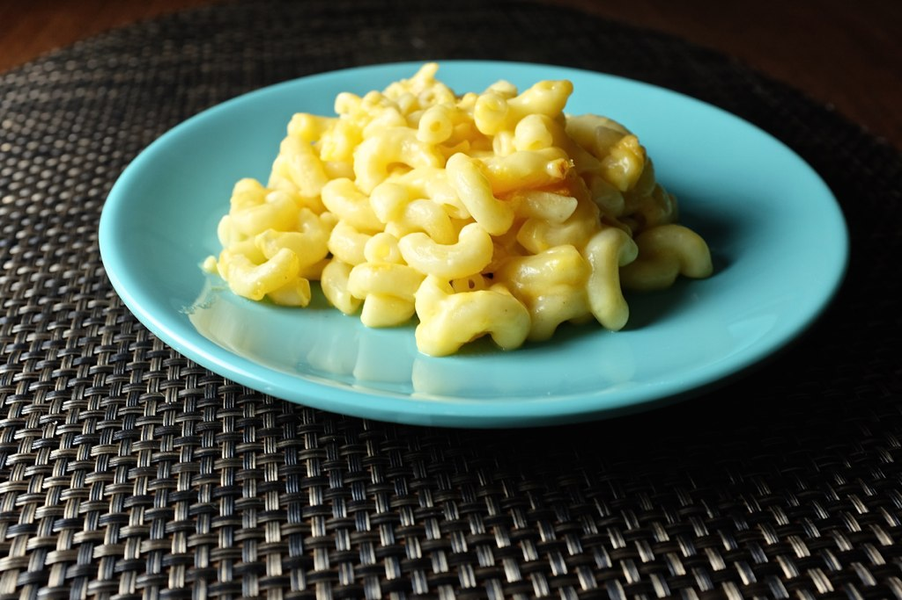

Macaroni Cheese

Description
There is nothing better than a hot plate of gooey, cheesy macaroni cheese to fill you up on a cold winter evening.This simple recipe will show you how to make the most delicious, cheesy and comforting macaroni cheese with just seven ingredients. PRO TIP: use cavatappi instead of macaroni for an even more delicious texture to the dish: the ridges and curls of this squiggly, hollow pasta take it to the next level.
Ingredients
- Macaroni or Cavatappi - 250g
- Butter - 50g
- Plain flour - 50g
- Milk - 500ml
- Strong Cheddar Cheese, grated - 200g
- Salt - to taste
- English Mustard powder - 1 tsp
Instructions
- Fill a large pan with hot water and add plenty of salt - the water should taste salty, almost like the sea. Bring to the boil.
- Once the water has boiled, add your pasta and cook according the the packet instructions. PRO TIP: you might want to shorten the cooking time by a couple of minutes because it will continue to cook under the grill later on. This will ensure that it remains al dente and delicious.
- Once cooked, strain but retain a couple of tablespoons of the starchy cooking water.
- While waiting for the water to boil, melt your butter in a small saucepan.
- Once the butter has melted, add the flour and the mustard powder and stir the mixture so that it becomes a thick, smooth paste.
- Cook the flour and butter paste for about a minute, stirring constantly, until it smells biscuity and has a slightly crumbly appearance.
- Add a splash of milk to the small saucepan and stir vigorously to avoid any lumps; the paste will thicken rapidly.
- Once the paste is smooth again, repeat the step above until all of the milk is used up. If the mixture is still very thick, you might need to add a little more milk. It should coat the back of a wooden spoon and the line should remain if you draw your finger across it.
- Heat the mixture until it is just below boiling point: don't let it boil!
- Add most of the grated cheddar and stir over the heat until it is completely melted and the sauce is smooth and silky. If there are any lumps, use a whisk or hand-blender to beat them out. Keep some of the cheese to one side (this will go on top of the dish before we put it under the grill).
- Add the reserved starchy cooking water from the pasta to the pasta and stir well. It should be shiny and separated, not dully and clumpy.
- Quickly add the cheese sauce to the refreshed pasta and stir well.
- Pour the pasta and cheese sauce mixture into a large, oven-proof dish and sprinkle over the remaining grated cheese. If you have any breadcrumbs and/or grated parmesan cheese hanging around, feel free to sprinkle on top of the grated cheese (this will add additional crunch and deliciousness).
- Put the dish under a hot grill and cook until the cheese is bubbling and golden and the macaroni cheese is hot all the way through.
- Serve immediately with salad and/or garlic bread.